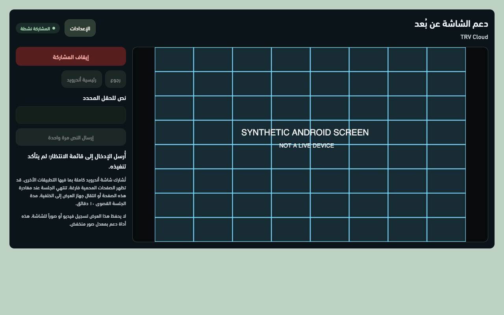
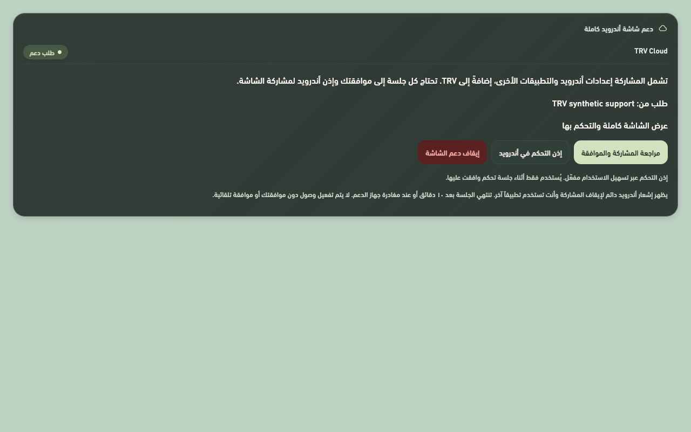

TRV CLOUD
دعم الشاشة كاملة.
من داخل TRV Cloud.
يتضمن التحديث عرض شاشة أندرويد والتحكم بها، بما فيها التطبيقات الأخرى، بعد موافقتك من الشاشة نفسها.
تنزيل تحديث TRV 3.5.33ملف APK لأندرويد · ثبّته كتحديث فوق النسخة الحالية.
واجهة الدعم عن بُعد
عرض الشاشة، اللمس والسحب، والرجوع إلى رئيسية أندرويد.

الموافقة من الشاشة
الإعدادات ← الاتصال ← دعم شاشة أندرويد كاملة.

قبل بدء الجلسة
ثبّت التحديث، ثم فعّل اتصال TRV Cloud وصلاحية الوصول للجهاز المصرّح له. يتطلب التحكم أيضاً تفعيل خدمة دعم شاشة TRV في إعدادات تسهيل الاستخدام في أندرويد.
التحكم بيدك
يمكنك إيقاف المشاركة من الشاشة أو إشعار أندرويد. تنتهي الجلسة بعد ١٠ دقائق أو عند مغادرة صفحة الدعم. قد تمنع أندرويد التحكم في الصفحات المحمية وتحتاج إلى تفاعلك المباشر.